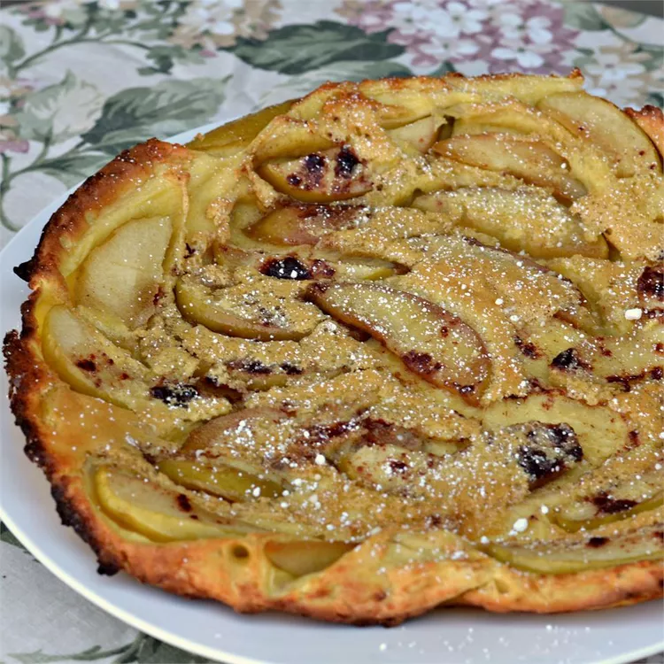

Pancake Recipe

Ingredients
- 3 tabelespoons butter
- 1 large apple, cored and sliced
- 1/2 cup white sugar, divided
- 2 teaspoons ground cinnamon
- 4 large eggs
- 1/3 cup milk
- 1/3 cup all-purpose flour
- 1 teaspoon baking powder
- 1 teaspoon vanilla extract
- 1 pinch salt
Steps
- Preheat the oven to 400 degrees F (200 degrees C).
- Melt butter in an oven-safe skillet over medium heat. Add apple slices, 1/4 cup sugar, and cinnamon; cook and stir until apples are tender, about 5 minutes. Remove from the heat.
- Beat eggs, milk, flour, remaining 1/4 cup sugar, baking powder, vanilla, and salt in a large bowl until smooth. Pour batter evenly over apples.
- Bake in the preheated oven until pancake is golden brown, about 10 minutes.
- Remove from the oven. Run a spatula around the edges to loosen. Invert carefully over a large plate to serve.